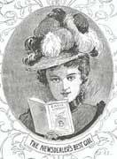
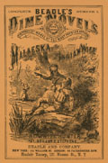

This introduction to women’s sensational dime novel romance is divided into eight sections. You may read it as one essay or jump to various sections by clicking on the titles below.Overview of Women’s Dime Novels and Cheap Fiction
The Growth in Reading in the Nineteenth Century
The Fiction Boom of the Antebellum Period
Dime Novels Bring the Fiction Boom to the Working Class
Dime Novels for Women
Who Read the Woman’s Dime Novel?
Shaping a New Genre: Women’s Sensational Romantic Fiction
The Middle-Class Reacts to the New “Degraded” Literature
Sources & Additional Information
Overview of Women’s Dime Novels and Cheap Fiction [1870-1920]
In 1899, Street & Smith, a key publisher of cheap fiction for women, featured “The Newsstand’s Best Girl” on the cover of their trade newsletter, Street & Smith’s Newstrade Bulletin. Their “best girl” reader was young, well dressed, and independent. She is depicted wearing a saucy straw hat piled high with enormous plumes. In her hand she holds an open copy of Street & Smith’s successful women’s series, the Eagle Library. She appears to have been momentarily interrupted from her pleasurable pastime, gazing directly out at the newsstand owner who has caught her in the act of reading. Her portrait is featured in the center of a web of smaller portraits of popular writers of the day whose stories she favors–Effie Adelaide Rowlands, Bertha Clay, and Mrs. Georgie Sheldon. The position of her portrait and her intent gaze, only slightly softened by the book coyly brushing her chin, suggests that by the turn of the century Street & Smith recognized the young female reader as a central part of the cheap fiction business. They accorded her a place of respect and urged the newsstand dealer to treat her with respect as well.
Just how young female readers came to be an important part of the cheap fiction business and what role reading had in the lives of the young working-class women who read them is the central concern of the American Women’s Dime Novel Project. It traces the development of the branch of women’s fiction which, barely recognized in 1870, would be slowly developed and shaped through a variety of publishing strategies, until by the turn of the century it was a clearly recognizable and profitable addition to the catalogs of several key cheap fiction publishers.
The Growth in Reading in the Nineteenth Century
Prior to the Civil War, reading and publishing were activities confined to the upper class and upper-middle classes. But new developments in the middle of the nineteenth century changed that. The growth of free public education increased the number of Americans who could read and comprehensive literacy was no longer confined to a privileged few. A new interest in libraries developed and public and private libraries expanded rapidly. In addition to the social changes brought about by increased education and access to reading material, technological changes in industry created cheaper and faster ways to print books. New kinds of paper brought down the expense of paper. These technological changes also created improvements in transportation and distribution making it feasible to get books to the new readers in ever distant markets. For example, prior to the expansion of the railroads, publishers relied on rivers to distribute their books. This meant distribution came to a virtual standstill when the rivers where frozen. Even improved methods of lightening and a shift from candles to oil lamps made reading at home in the evenings easier by creating a brighter, steadier light.
The Fiction Boom
All these factors created a huge new audience for readings and made books affordable and reading possible for more people than ever before. There was a huge boom in fiction, and in particular a craze for women authors. Indeed women’s books were the first “bestsellers” in America. The boom began in the 1850s with books such as The Lamplighter, The Wide Wide World, andRuth Hall. At the same time that Herman Melville and Nathaniel Hawthrone were selling a few thousand copies a year, Fanny Fern sold 70,000 copies of her book Fern Leaves and her book Ruth Hall sold more than 50,000 copies in the first eight months of its publication. Prior to this, a sale of 2,000 copies had been considered a good press run. A bit later Uncle Tom’s Cabinby Harriet Beecher Stowe sold hundreds of thousands of copies. Prior to 1800 only four books by women were printed. Yet by 1872, 75 percent of the books published that year were by women (Tebbel 179).
Some people were not pleased about this surge in books by women. Hawthorn wrote a friend that:
America is now wholly given over to a dammed mob of scribbling women, and I should have no chance of success while the public taste is occupied with their trash–and should be ashamed of myself if I did succeed. What is the mystery of these innumerable editions of the ‘Lamplighter’ and other books neither better nor worse?–worse they could not be, and better they need not be, when they sell by the 100,000.
His attitude reflected the dual stigma women’s fiction labored under as best selling literature written by women. Hawthrone and some of his contemporaries did not regard the women’s work as serious fiction. This has been a long lasting legacy that is beginning to change now–slowly.
Dime Novels Bring the Fiction Boom to the Working Class
We have come to the end of another year of bookselling, and the lesson of the year, so far as we can judge, is that Americans want cheap books. The tendency of prices in all departments has been downward during the past two years, and the necessity of consulting the popular demand was never more apparent than at the present time.
American Booksellers’ Guide, 1873

While there was a gradual increase in the affordability and availability of books in the nineteenth century, prices were still relatively high. In the 1850s the average book cost one dollar to one and a half dollars. This put books out of the reach of most working-class readers and even limited the number of books middle-class readers could consume. The fiction boom created a new branch of publishers, men who wanted to cash in on this growth in reading by offering more affordable books. One such venture produced the first dime novel,Malaeska by Ann Stephens, which was published as a dime novel by the firm Beadle and Adams in 1860. This book became an instant hit and Beadle’s Dime Novels established the viability of cheap fiction for “the millions.” Beadle and Adams alone published over five million dime novels between 1860 and 1865.Beadle and Adams’ first flush of success has also been attributed to the Civil War and the thousands of bored military men who passed the time reading these inexpensive, light, and portable novels. Publishers soon flooded into the cheap fiction market and expanded the offerings beyond the cheap ten-cent paperbacks pioneered by Beadle and Adams, to include cheap nickel libraries, serialized story papers, and cheap library editions. The term “dime novel” has come to be the accepted term for these kinds of inexpensive fiction aimed at a mass audience.
Scholars and collectors looking back on the dime novel might assume that this was a genre for men only. Collectors of dime novels in the 1920s and 1930s, who did much to preserve them, focused on the stories for men and boys. They enshrined them as stories of pioneer spirit and celebrated them as a brash world of “pluck and luck” in which women seemed to have but a tiny part. What is left out of this history are the stories for women. Charles Bragin, a prominent collector of dime novels, published a bibliography for collectors in 1938. He notes that his bibliography only contains “real” dime novels and that he has excluded certain series that he does not consider true dime novels. The excluded series are “BEADLES Waverly Library. Fireside Lib. – these are “love stories” and certainly not dime novel material”. He defines dime novels as “lurid literature” – of the West, detectives, bandits, etc. – peculiarly American – with lurid cover illustrations.”
Dime Novels for Women
Although it is true that “lurid” literature of the West made up the majority of the dime novels published, particularly in the first decade of cheap fiction publishing, there were dime novels for women. Thousands of story papers, dime novels, and cheap library editions were printed with stories written for, by, and about women. They encompassed pioneer romances, sensational murder stories, and domestic and society romances. Typical titles include All for Love of a Fair Face, The Story of a Wedding Ring, A Charity Girl, The Unseen Bridegroom, and Only a Mechanic’s Daughter. The authors, such as Bertha M. Clay, Geraldine Fleming, and Laura Jean Libbey, were once wildly popular with readers, but their fame faded as the dime novel craze ended in the 1920s.
For more detailed information about the publishers, individual histories are available on the key dime novel publishers for women. Information is also available for each of the women’s story papers and series printed between 1870 and 1929.
Who Read the Woman’s Dime Novel?
Who were the readers of dime novels for women? It is hard to say with certainty, but evidence points to young working-class women in particular. But this does not mean they were the only readers–there is also evidence to suggest that older women read them, as did middle-class women and girls. But the primary audience suggests that the main audience was working-class. It is always difficult to learn more about working-class readers. They did not leave letters and diaries discussing their reading practices or favorite novels as middle-class and upper-class readers did.
To try and answer the question of readership, references made by key authors are helpful, such as this statement from a newspaper article about Laura Jean Libbey:
She saw about her on every hand thousands of young women of her own immature age…struggling against fearful odds for a poor existence at best. Being a woman of lively sympathies, she became deeply interested in the welfare of her toiling sisters everywhere throughout the world, and she nobly resolved to consecrate her life and her talents to the amelioration of their condition — to make her genius the lever which should raise them to the dignity of true womanhood, unfettered by the … chorus of relentless, poorly requited toil.
This overt attempt to connect Libbey to young working women indicates that the author or at least the publisher is hoping to reach a working-class audience. The quality of the bindings also suggests that the readers were of limited means. The binding, cover, and paper were all very cheap. Even the printing job was done with the strictest economy in mind. The print was fuzzy with frequent breaks in the type–a standard which would unacceptable in a more expensive book. There was also the matter of price. The dime novel romances for women started at a nickel and averaged ten to twenty-five cents. Better quality books published at the same time might cost a dollar or a dollar and fifty cents.
Dorothy Richardson, a middle-class reformer and journalist who wrote about the working women’s experiences in the factories in 1905 also provides a valuable clue about readership. In her book The Long Day she chronicled occupations open to young working-class women. She herself held various jobs around New York City, partaking in the work and meeting the young women who held these jobs. She often asked them what their tastes were in reading and when she learned they read Laura Jean Libbey, Charlotte Brame, and Effie Rowlands she called it “trashy fiction” and encouraged them to read middle-class favorites such as Little Women or works by Charles Dickens. Readers apparently did not take kindly to her efforts to improve their taste. She reported that they rebuffed her attempts to “elevate” their reading habits and told her not to put on airs with them. In the conclusion Richardson reveals that she has not changed her opinion of working women’s reading habits. She notes that:
Another important thing looking to the well-being of the working girl of the future would be the wide dissemination of a better literature than that with which she now regales herself . . . Girls fed upon such mental trash are bound to have distorted and false views of everything. There is a broad field awaiting some original-minded philanthropist who will try to counteract the maudlin yellow-back by putting in its place something whole and sweet and sane.
In the 1870s, women, especially young women, started to work outside the home in paid positions in growing numbers. They went to work in sex segregated jobs–usually in the garment industry or other “women’s work,” such as working in a commercial laundry or as a domestic. Life for working-class women in the 1880s and the 1890s was not easy. They worked in dangerous factories for long hours–often 12 hours a day for an average work week of 60 hours. In 1882 the average wage was $5.00 to $8.00 a week. This was not enough to support themselves or to live alone and most young women lived with their families or shared rooms with other young women.
The same forces that increased the production and distribution of cheap fiction also fueled the growth of the cities and most of the working class dime novel romance readers lived in newly emerging large cities such as New York, Pittsburgh, and Chicago. The neighborhoods they lived in were crowded and extremely dirty. Death rates due to poor sanitation were high. Many of the dime novel readers were immigrants themselves or the children of immigrants. Personal accounts of how young women reveal that they felt they were truly Americans once they could read a dime novel in English on their own. Rose Cohen, a Russian immigrant, reported, “I felt so proud that I could read an English book that I carried it about with me in the street. I took it along to the shop. I became quite vain” (Cohen, 249).
Despite these hardships many young women wanted to work outside the home. They found new freedoms and opportunities in the city that their mothers never had on the farm or in a rural village. One of these was the freedom to date and to select their own marriage partners.
Shaping a New Genre: Women’s Sensational Romantic Fiction
The sentimentalists popularized the story of a young girl suddenly adrift and dependent on her own resources in their bestsellers such as The Lamplighter and The Wide, Wide World. This plot device remains at the center of dime novel romance. The dime novel romance for women also shares in what Nina Baym calls the central focus of sentimental fiction, “the trials and triumph” of women (Baym, 1978, 17). But while dime novel fiction for women maintains this focus on women’s struggles and trials, it differs in how it represents these experiences by taking the trials to new extremes. Dime novel fiction does not center on the psychology of women, their internal development and growth, and the minutia of daily domestic life–it shifts instead to a world of action–borrowing from sensational fiction a focus on action and events. Advertisements for Street & Smith romances promised to avoid “tedious narrative or weak sentimentalism,” while providing “nothing but good strong stories of today” (Johannson 304).
A main theme in the dime novel romance is of weddings gone wrong–false marriages, marriages to bigamists, marriages by “false” officials, marriages to unloved men out of a sense of duty, marriages to the right man for the wrong reasons, and marriages between lovers who are then immediately separated. Dime novel fiction is a world in which marriage and sexuality are associated with danger. Consider these titles–Another Man’s Wife, The Fatal Wooing,In Love’s Bondage, Unnatural Bondage. This is more than a formulaic adherence to the conventions of sensational literature. For the dime novel heroine marriage is a dangerous sexual transaction prone to disastrous outcomes. It is an expression of the risk that the newly emerging active sexuality could represent for working women. Willful Gaynell by Laura Jean Libbey serves as a good example. In it the young heroine Gaynell is abducted by the evil factory overseer and held in captivity until he can arrange a marriage with her against her will. Gaynell, too innocent to comprehend the full danger of her situation, slowly realizes her danger and the narrator reveals:
Another thought forced itself upon her confused brain: Would not a man who was capable of perpetrating such a daring fraud be capable of any other deadly sin, and especially against a weak, unprotected girl whom cruel fate had placed in his power? Gaynell gasped “Oh what shall I do?…Peril besets me on every side; the hand of fate is thrusting me on to my doom (66-67).
Whereas sentimental heroines dealt with unjust relatives, an uncaring society, and their own flawed characters, dime novel heroines dealt with threats to their physical self, and in particular, their virginity. This fear of tainted purity is hinted at in sentimental fiction, but it takes center stage in the dime novel romance and is perhaps the most defining feature in what separates the two genres. Because the dime novel heroine’s virginity is constantly under attack and because she will go to any extreme, even death, to defend it, the dime novel romance is a rebuttal of middle-class notions of a promiscuous working class.
The focus on protecting virtue at all costs is not a new one, but what was new is the relentless repetition of this story in the woman’s dime novel fiction and the insistence that virtue matters most of all to these heroines. It seems likely that that dime novel romances served as a cultural resource in working women’s struggle against repressive and hostile views of their sexuality and femininity. Characters in these novels were often falsely accused of losing their virtue and were also always vigorously defended. In another “Laura Jean Libbey” as the genre came to be known, Little Rosebud’s Lovers, Rosebud’s lover roundly defends her from false charges in this enjoinder, “Hush,” he said, “the word disgrace has nothing in common with my pure Little Rosebud…never say it again!” (149). And in Willful Gaynell, the hero declares:
Stop!-not another word!…”Neither I nor any other honest man will stand by and hear aught that is insulting spoken of a pure young girl whose honest toil wins for her daily bread. My respect and admiration for a working-girl is profound; every true gentleman will voice my sentiments (25).
As a sign of the triumph of the working girl, an affirmation that her sexual purity is intact, and a rebuttal of middle-class disparagements, happy endings were critical. Louis Gold, Laura Jean Libbey’s secretary, noted “Only once did she write a story with an unhappy ending; the storm of protesting letters she received discouraged her from making another such blunder” (Gold 48). Instead, she wrote endings such as these in which Gay’s husband stated:
I am growing more fond of my darling Little Gay each passing day…I wish I could speak in a voice every young man in the world could hear, I would advise them all to search for and choose a bride from among the working-girls as I did. My life with my sweet, adoring love is a perpetual honeymoon” ( 249).
The Middle-Class Reacts to the New “Degraded” Literature
This theme of protected virtue was lost on the middle class, however, who focused instead on the dime novel romance’s sensationalism and decidedly unmiddle-class notions of gender relations in which young girls took active roles in courting men and pursuing love. This new “seductive and dangerous” literature, in the words of Harriet Beecher Stowe in 1872, aroused a new round of outcry over the reading choices of women. This time the outcry was not against women reading in general, as it had been earlier, but specifically directed against women who read “degraded” literature. Critics such as Stowe feared that this new genre represented a nation in moral decline. For the middle class, the dime novel became a site of struggle as they sought to impose middle-class gender norms on the working class and to curtail new gender developments among the working class that allowed women unprecedented freedom in selecting and dating potential partners.
Perhaps the best known critic of dime novel literature was Anthony Comstock, Secretary and Chief Special Agent for the New York Society for the Suppression of Vice, and Post-Office Inspector. His attempts to have dime novels removed from the mails are legendary. In his 1883 book Traps for the Young, Comstock declared: “vile books and papers are branding-irons heated in the fires of hell, and used by Satan to sear the highest life of the soul” (240). Middle-class readers may well have conflated young and working-class readers by assuming both were uneducated and incapable of making moral choices for themselves and were thus in need of guidance. Comstock took aim at dime novels because he shared in the middle-class belief that reading had a powerful impact on readers. He declared, “Good reading refines, elevates, ennobles, and stimulates the ambition to lofty purposes. It points upward. Evil reading debases, degrades, perverts, and turns away from lofty aims to follow examples of corruption and criminality” (Comstock 5).
Comstock’s primary concern were the scenes of criminal behavior in dime novels, such as counterfeiting, burglaries, abductions, and murders, also common in women’s series, which he feared would lead to copycat behavior. But he was also concerned with “sexual purity” and made the case that dime novels “sow[ed] the seeds of lust” (Comstock 177). His worries about sexual purity were linked to the idea that young people were “abusing” themselves, thus “lust” in dime novel literature would lead to an enervated race. His campaign against dime novels captured the middle-class hysteria about the dangers of reading degraded literature, but it did nothing to quell the demand for the dime novel fiction.
Sources & Additional Information
Bragin, Charles. Bibliography of Dime Novels, 1860-1928. Brooklyn: C. Bragin, 1938.
Comstock, Anthony. Traps for the Young. New York: Funk & Wagnalls, 1884.
Couvares, Francis. G. The Remaking of Pittsburgh: Class and Culture in an Industrializing City, 1877-1919. Albany: The State University of New York Press, 1984. [Not specifically related to the subject of working-class women, but an engrossing account of how working-class life changed under industrialization.]
Cox, Randolph. The Dime Novel Companion. Westport, Ct.: Greenwood Press, 2000.
Denning Michael. Mechanics Accents: Dime Novels and Working Class Culture in America. Berkeley: University of California Press, 1990.
Eisenstein, Sarah. Give Us Bread But Give Us Roses: Working Women’s Consciousness in the United States, 1890- to the First World War. London: Routledge & Kegan Paul, 1983.
Enstad, Nan. Ladies of Leisure, Girls of Adventure. New York: Columbia University Press, 1999.
Erenberg, Lewis. Steppin’ Out: New York Nightlife and the Transformation of American Culture, 1890-1939. New York: McGraw, 1976.
Garrett, Elisabeth. At Home: The American Family 1750-1870. New York: Harry N. Abrams Inc., 1990. [Not specifically related to the topic of working-class women and cheap fiction, but it provides an excellent sense of the material conditions of home life in the nineteenth-century. Her section on lighting in the home is particularly useful for imaging what reading was like without electricity.]
Hughes, Winifred. The Maniac in the Cellar: Sensational Novels of the 1860’s. Princeton, New Jersey: Princeton University Press, 1980. [Sheds light on the connections between the new genre of women’s dime novel romance and its predecessor, the sensation novel.]
Johannsen, Albert. The House of Beadle and Adams. 3 vols. Norman: University of Oklahoma Press, 1950.
Kaestle, Carl, et al. Literacy in the United States: Readers and Reading Since 1880. New Haven: Yale University Press, 1991.
Kessler-Harris, Alice. Out to Work: A History of Wage-Earning Women in the United States. New York: Oxford University Press, 1982.
Lehmannn-Haupt, Lehmann, Lawrence G. Wroth and Rollo G. Silver. The Book In America. New York: Bowker, 1951.
Libbey, Laura Jean. Willful Gaynell. New York: J.S. Ogilvie, n.d.
—-.Little Rosebud’s Lovers. New York, n.d.
Matthaei, Julie. An Economic History of Women in America: Women’s Work, the Sexual Division of Labor, and the Development of Capitalism. New York: Schocken Books, 1982.
Noel, Mary. Villains Galore: The Heyday of the Popular Story Weekly. New York: MacMillan, 1954.
Pam, Dorothy. “Exploitation, Independence, and Solidarity: The Changing Role of American Working Women as Reflected in the Working-Girl Melodrama, 1870-1910.” Dissertation. New York University, 1980.
Papashvily, Helen White. All The Happy Endings: A Study of the Domestic Novel in America, the Women Who Wrote It, the Women Who Read It, in the Nineteenth Century. New York: Harper and Bros., 1956.
Peiss, Kathy. Cheap Amusement: Leisure in Turn-of-the-Century New York. Philadelphia: Temple University Press, 1986.
Peterson, Joyce, Shaw. “Working Girls and Millionaires: The Melodramatic Romances of Laura Jean Libbey.” American Studies. 1983 24 (1):19-35.
Reynolds, Quentin. The Fiction Factory. New York: Street & Smith, 1955.
Richardson, Dorothy. The Long Day. Charlottesville: University Press of Virginia, 1990.
Rosenzweig, Roy. Eight Hours for What We Will: Workers and Leisure in an Industrial City, 1870-1920. Cambridge: Cambridge University Press, 1983.
Shove, Raymond. Cheap Book Production in the United States, 1870 to 1891. Urbana, Illinois: University of Illinois Press, 1937.
Shudson, Michael. Discovering the News: A Social History of American Newspapers. New York: Basic Books, 1978.
Smith-Rosenberg, Carroll. Disorderly Conduct: Visions of Gender in Victorian America. New York: Knopf, 1985.
Soltow, Lee and Edward Stevens. The Rise of Literacy and the Common School in the United States: A Socioeconomic Analysis to 1870. Chicago: The University of Chicago Press, 1981.
Stein, Leon and Philip Taft, eds. Workers Speak: Self-Portraits. New York: Arno Press, 1971.
Stern, Madeleine. Publishers for Mass Entertainment in Nineteenth Century America. Boston, G.K. Hall, 1980.
Sullivan, Larry, Lydia Cushman Schurman, editors. Pioneers, Passionate Ladies, and Private Eyes: Dime Novels, Series Books, and Paperbacks. New York: Haworth Press, 1996.
Tebbel, John. A History of Book Publishing in the United States. Vol. I . New York: Bowker, 1972.
Zboray. A Fictive People: Antebellum Economic Development and the American Reading Public. New York: Oxford University Press, 1993.